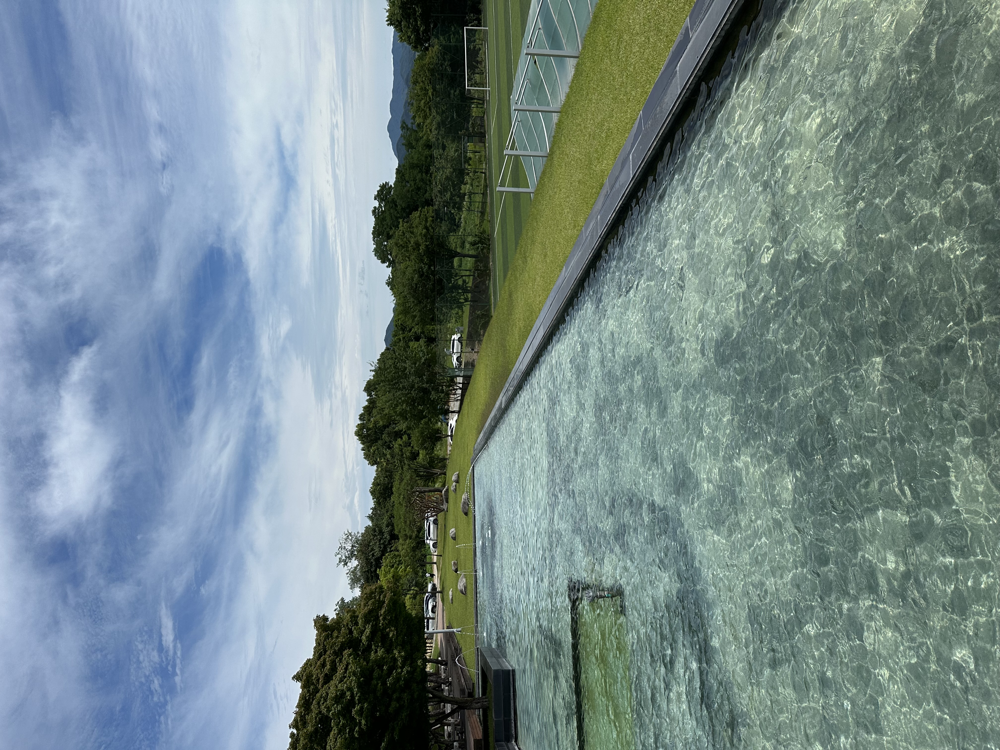
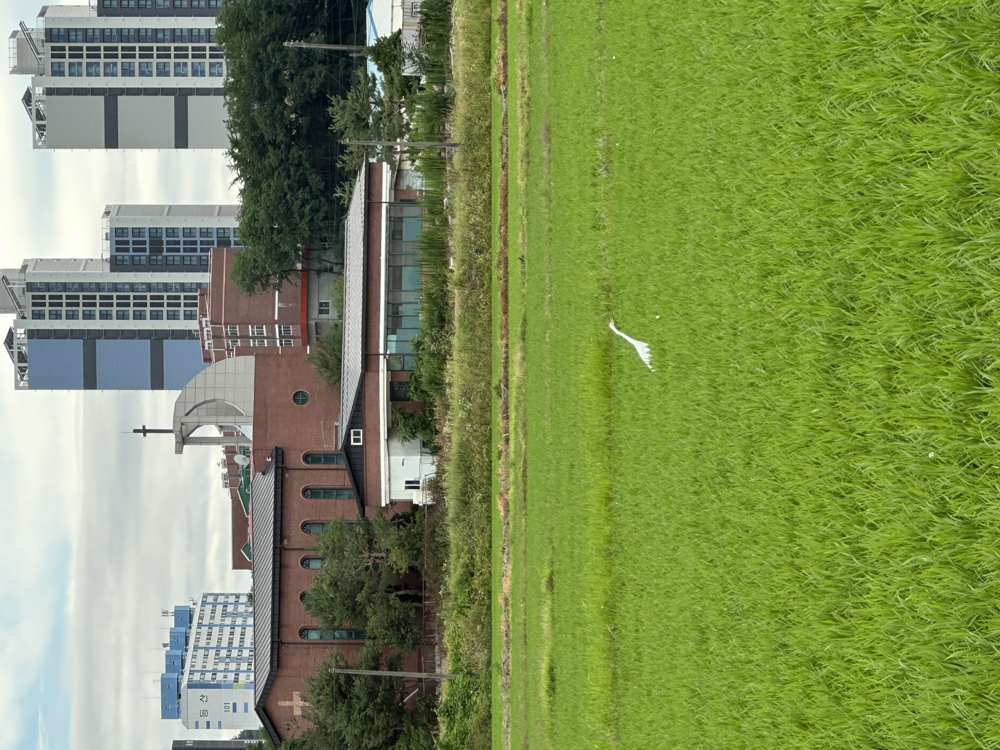
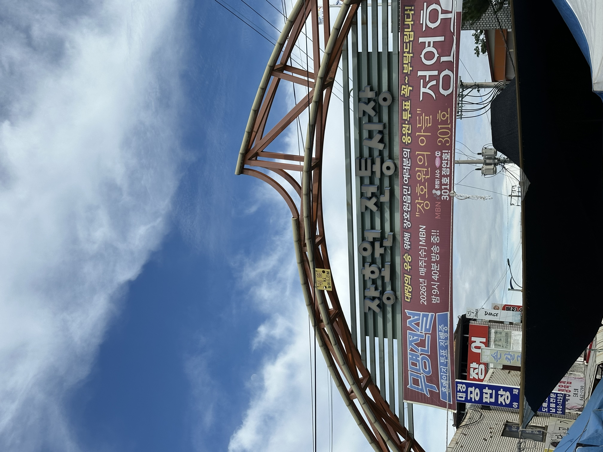
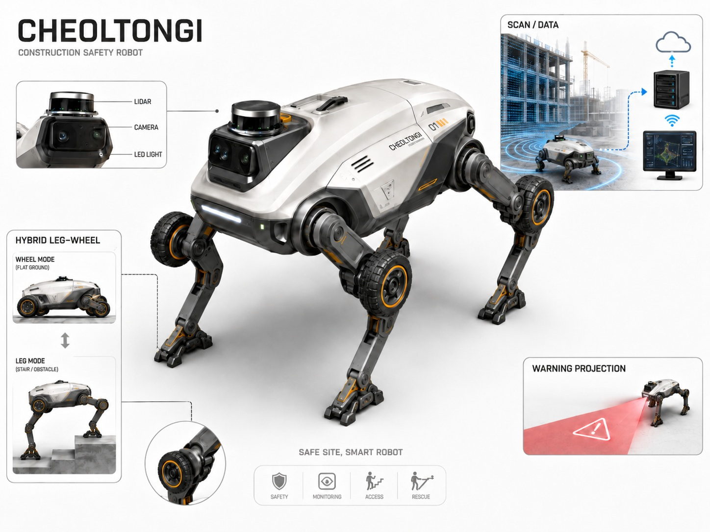
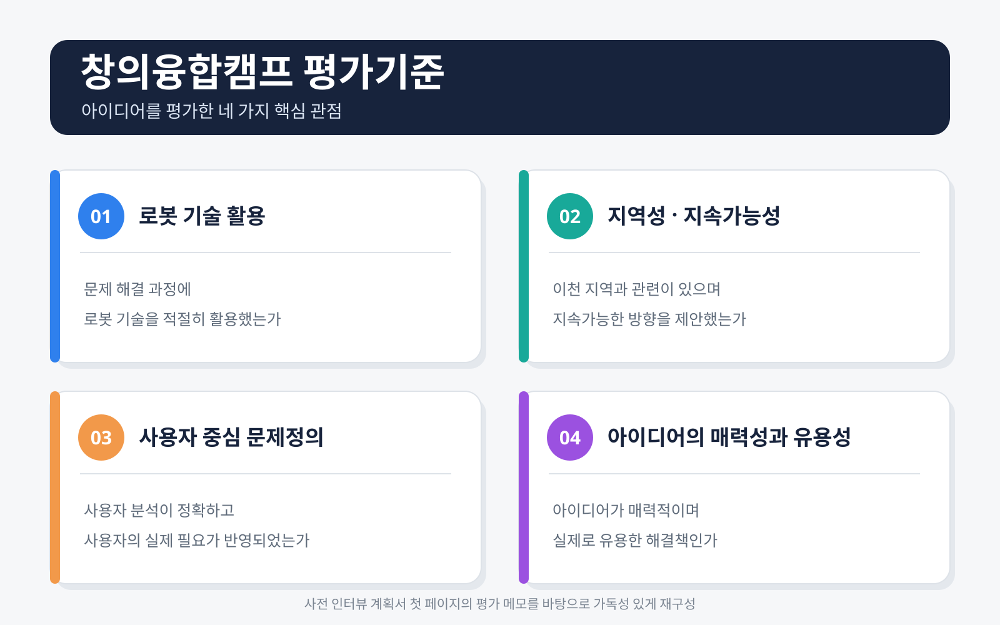

01 · OVERVIEW
개요
이 프로젝트는 4개 대학 학생이 한 팀으로 참여한 2026 지능형 로봇 산업분야 컨소시엄 창의융합캠프에서 진행했습니다. 캠프의 과제는 이천 지역에서 해결할 문제를 찾고, 지능형 로봇을 활용한 지속가능한 아이디어를 제안하는 것이었습니다.
이 페이지는 철통이라는 로봇을 실제로 완성했다는 의미보다, 디자인씽킹을 학습한 뒤 현장조사와 인터뷰를 수행하고 예상과 다른 상황에 대응해 문제를 재정의한 과정을 정리하는 데 초점을 둡니다.

Team
- 광운대학교이주은
- 단국대학교이주원
- 숭실대학교주상현
- 한양대학교 ERICA이도윤
02 · DESIGN THINKING JOURNEY
학습에서 현장조사, 문제 재정의와 발표까지
아이디어를 먼저 정하고 사용자를 끼워 맞추지 않기 위해 다음 과정을 순서대로 진행했습니다.
03 · INITIAL ASSUMPTIONS
현장에 나가기 전 준비한 가설과 질문
사전 계획에서는 비교적 도심 생활에 가까운 상황을 가정했습니다. 주차 정산기와 같은 기계 사용의 어려움, 보행 속도 차이와 횡단보도 이용 문제를 확인하고 로봇 서비스의 필요성을 질문하려 했습니다.
- 불편한 경험 확인
이천에서 생활하면서 개선되기를 바라는 점과 실제로 불편했던 상황을 질문합니다. - 원인과 미해결 이유 확인
문제가 언제 발생하고 왜 지금까지 해결되지 않았는지 구체적으로 확인합니다. - 사용자 관점의 해결책 확인
사용자가 원하는 방식과 제안 서비스의 사용 의향, 개선 의견을 질문합니다.
이 문서는 실제 인터뷰 결과가 아니라 현장조사를 준비하기 위한 초기 계획입니다. 현장에서는 이 계획을 그대로 수행하지 못했고, 그 차이가 문제를 다시 바라보는 계기가 되었습니다.
원본 인터뷰 계획서 보기04 · FIELD RESEARCH IN JANGHOWON
예상과 다른 환경에서 조사 전략을 수정


- 현장 도착논과 농지가 넓게 분포한 농촌 환경을 직접 확인했습니다.
- 첫 장소주민이 모일 것으로 예상한 교회를 방문했지만 별도 행사로 인터뷰 대상자가 거의 없었습니다.
- 현장 정보현장에 있던 운전기사님과 대화하며 시장이 열렸다는 정보를 얻었습니다.
- 계획 변경처음 정한 장소를 고집하지 않고 장호원 전통시장으로 이동했습니다.
- 주민 인터뷰시장 인근 노인 대상 교육시설에서 어르신들의 교통과 여가생활에 관한 의견을 들었습니다.
05 · INTERVIEW VS OBSERVATION
주민의 답변과 팀의 직접 관찰을 분리
문제를 과장하거나 인터뷰 내용을 바꾸지 않기 위해 주민이 직접 말한 내용과 팀이 주변 환경에서 별도로 발견한 내용을 구분했습니다.
주민 인터뷰
- 톡버스 도입 이후 먼 지역으로 이동하는 일반 버스가 부족해졌다는 의견
- 대중교통 이용이 불편하다는 의견
- 지역에서 즐길 수 있는 여가생활이 부족하다는 의견
직접 관찰
- 지역을 이동하며 외국인 노동자가 많이 보인다는 점을 관찰
- 해당 관찰을 주민 인터뷰의 답변으로 해석하지 않음
- 외국인 노동자의 작업환경과 안전 문제를 별도의 2차 조사 주제로 확장
06 · PROBLEM REFRAMING
처음 준비한 질문에서 새로운 문제 방향으로 이동
주차 정산기 사용과 보행·횡단보도 불편
도심형 생활환경과 다른 장호원의 농촌 특성
교통 불편, 장거리 이동 부족, 여가생활 부족
지역에서 외국인 노동자가 많이 보이는 현장 특성
외국인 노동자의 작업환경과 건설현장 안전 문제 탐색
변화하는 건설현장에서 작업자가 언어와 관계없이 위험을 빠르게 인지하고 대응하도록 돕는 방법
외국인 건설노동자의 안전 문제는 주민 인터뷰에서 직접 나온 결론이 아니라, 현장 관찰 이후 추가 자료조사를 거쳐 확장한 문제 방향입니다.
07 · PERSONA & POV
발표용 페르소나와 사용자 관점의 질문
최종 발표에서는 문제 상황을 구체화하기 위해 이천의 아파트 공사현장에서 일하는 외국인 건설노동자를 중심으로 페르소나를 구성했습니다. 이 페르소나는 실제 인터뷰 대상자가 아니라, 발표에서 문제 상황을 구체적으로 설명하기 위해 구성한 인물입니다.
“추락 위험 구간에 다가가기 전에 위험 구역을 인지하고 안전하게 근무할 수 있는 현장이 필요하다.”
고정된 표지판은 계속 변하는 공사현장 상태를 즉시 반영하기 어렵고, 긴 문장이나 특정 언어에 의존한 경고는 모든 작업자가 빠르게 이해하기 어려울 수 있습니다.
어떻게 하면 변화하는 건설현장의 위험을 지속적으로 파악하고, 작업자가 언어와 관계없이 위험 구역을 즉시 인지하도록 도울 수 있을까?
08 · FROM INSIGHT TO CHEOLTONGI
현장 스캔과 시각 경고를 하나의 이동형 시스템으로 통합
철통이는 건설현장을 이동하며 구조물과 작업환경을 스캔하고, 위험 구역을 빛과 프로젝션으로 알려 작업자의 안전을 돕는 지능형 로봇 시스템 콘셉트입니다.

평지에서의 이동 효율과 계단·단차 대응을 함께 고려해 바퀴와 다리를 결합한 이동 구조를 시각화했습니다. 또한 LiDAR, Camera, IMU를 이용한 현장 인식과 서버·관리자 화면 연동 방향을 제안했습니다.
철통이는 실제 제작·검증된 안전장비가 아니라, 현장조사에서 도출한 문제를 구체화한 개념 설계와 시각적 프로토타입입니다.
09 · CONCEPT SIMULATION
작동 흐름을 설명하기 위한 인터랙티브 시각적 프로토타입
Three.js 기반 시뮬레이션은 철통이의 사용자 시나리오와 정보 흐름을 발표에서 직관적으로 설명하기 위해 제작했습니다. 실제 구조해석, 센서 정확도, 인체 보호 성능을 검증하는 프로그램은 아닙니다.
10 · EXISTING TECHNOLOGY RESEARCH
아이디어의 현실성과 한계를 확인하기 위한 Q&A 준비
아이디어를 공상으로만 남기지 않기 위해 기존 이동형 로봇, 현장 스캐닝, Digital Twin, 센서와 연산 분산 방식 등을 조사했습니다. 이 내용은 본 프로젝트에서 구현하거나 검증한 사양이 아니라, 발표 질의응답을 준비하며 구현 가능성과 제한 조건을 검토한 자료입니다.
- 이동 플랫폼
계단과 장애물이 있는 환경에서 순찰·점검에 활용되는 사족보행 로봇 사례를 조사했습니다. - 현장 데이터
SLAM, Scan-to-BIM과 Digital Twin을 이용해 설계 상태와 실제 현장을 연결하는 방향을 검토했습니다. - 환경과 연산 한계
분진에 의한 LiDAR 성능 저하, 센서 융합 필요성, 로봇과 중앙 서버의 분산 처리 방향을 검토했습니다.
당시 조사한 가격, 반응시간과 고정력 등의 수치는 현재 확정 사양이나 실험 결과로 사용하지 않습니다.
11 · EVALUATION & RESULT
평가기준과 수상 결과
평가기준은 로봇 기술 활용, 이천 지역과의 관련성 및 지속가능성, 사용자 분석과 필요 반영, 아이디어의 매력성과 유용성의 네 관점으로 구성되었습니다.

최종 발표는 문제정의와 POV, 해결책, 제품 시안, 기대효과와 질의응답 순으로 구성했습니다. 발표 본문과 질의응답 준비 자료는 하나의 PDF에 포함되어 있으며, 페이지에서는 두 자료의 성격을 구분해 설명합니다.
최종 발표자료 보기12 · REFLECTION & LIMITATIONS
현장에서 더 적절한 질문으로 바꾸는 경험
배운 점
- 사전 가설은 정답이 아니라 현장조사의 출발점이다.
- 예상한 장소에서 조사하지 못할 때 현장 정보에 따라 계획을 바꿀 수 있어야 한다.
- 인터뷰 답변과 주변 관찰은 서로 다른 근거로 구분해야 한다.
- 처음 생각한 문제를 버리고 다시 정의하는 것도 문제 해결의 일부다.
한계
- 인터뷰 대상과 범위가 제한적이었다.
- 외국인 노동자를 직접 인터뷰한 자료가 현재 확인되지 않는다.
- 실제 로봇 하드웨어를 제작하거나 현장 실증을 진행하지 않았다.
- 구조 하중, 센서 정확도, 반응시간과 인체 안전성을 검증하지 않았다.
처음 세운 질문에 답을 얻는 것보다, 현장을 통해 더 적절한 질문으로 바꾸는 과정이 중요하다는 점을 배웠습니다.
13 · RESOURCES